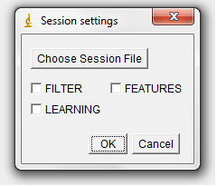
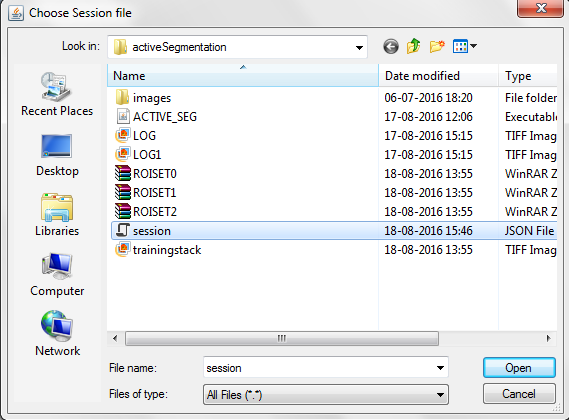
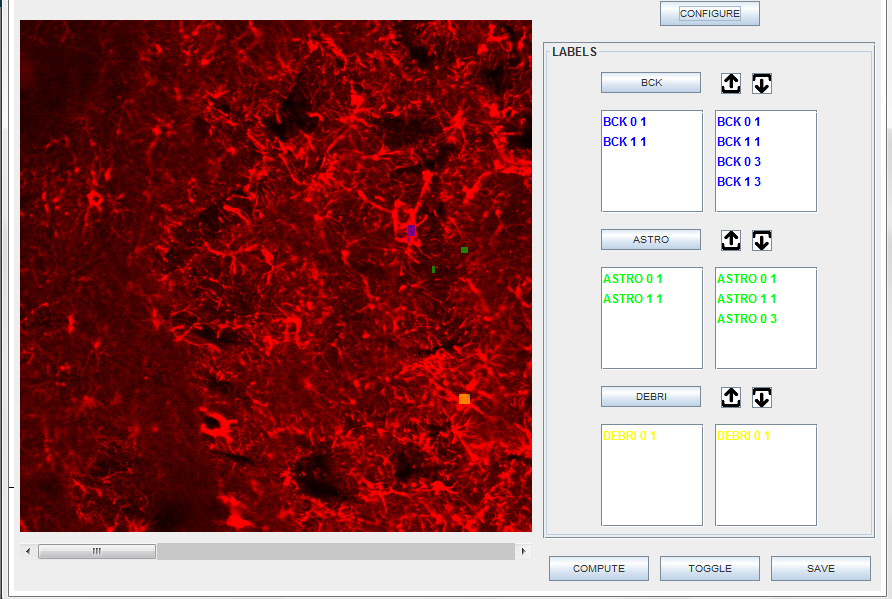
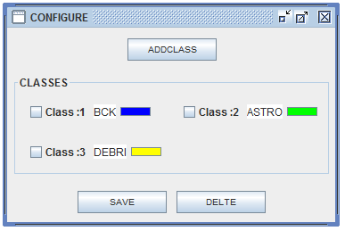

Developers
Student: Sumit Kumar Vohra
Mentor: Dimiter Prodanov
Organization:
International Neuroinformatics Coordinating Facility
Project description
Active Segmentation plugin is the redesign of existing Trainable Weka Segmentation (TWS) of ImageJ. The platform was developed in the context of GSOC 2016. Active Segmentation was developed with the main goal of providing a general purpose workbench that would allow biologists to access state-of-the-art techniques in machine learning to improve their image segmentation results. The Active Segmentation provides generic functionality and user friendly interface so that the user can include the state of the art filters and machine learning frameworks from the WEKA library:
- Active learning.
- Multi-instance learning designed by third party in a robust manner
Session Screen
Session is a provision for storing project data in the session file. It save the state of the system. First image illustrates the window for Session Screen. Session screen will load the existing(Previous) session of the project. It provide you the option to load the filter, feature and learning data. The "Choose Session File" button is used for loading session file from the local file system. The whole meta-data of the project will be saved in the same directory as selected by the user. The session file must be in "JSON" format.The second image shows the window for browsing session file on the local file system:
 
Code implementing the loading of session file can be found in the "getMetaInfo" method from the "io" package.
public MetaInfo getMetaInfo() {
if(metaInfo==null){
ObjectMapper mapper = new ObjectMapper();
try {
metaInfo= mapper.readValue(new File(path+Common.FILENAME), MetaInfo.class);
originalImage= IJ.openImage(metaInfo.getPath()+Common.TRAININGIMAGE+Common.TIFFORMAT);
return metaInfo;
} catch (JsonGenerationException e) {
e.printStackTrace();
} catch (JsonMappingException e) {
e.printStackTrace();
} catch (IOException e) {
e.printStackTrace();
}
metaInfo= new MetaInfo();
metaInfo.setPath(path);
}
return metaInfo;
}
As can be seen from the "ObjectMapper" in the code, the session file was mapped using the Jackson API, version 2.3.1.
The following code shows the format of session file for filters. FilterList consists of meta data information related to all the filters which are currently available in active segmentation. Each element in the list will give information about individual Filter. The key field in Filter is FilterName that will be unique for every filter. Filter will also consist of settings in key- value pair format.
{
"FilterList": [
{"Filter":"FilterName1","Setting1":"true","Setting2":"2","Setting3":"false", "FileList": "FilterName1.tif"},
{"Filter":"FilterName2","Setting1":"true","Setting2":"2",
"FileList": "FilterName2.tif"}
]
}
Filter Framework
Filter Framework is responsible for automatic loading of filters.It automatically finds all JAR files in the path and first level of subdirectories and those have implemented "IFilter" interface.
Active Segmentation Filters Screen
- The right black marked box is used to enable the unselected filters. User need to double click on filter name to enable it
- The settings for each filter is provided in the centre along with the shape of filter
- Filters process is started using the "COMPUTE" button.
- Filters meta data is dumped using the "SAVE" button.
- The "View" button is used to view the filters result for each image slice.
- The "Default" button is used to set the set default settings for the filter as provided by the developers .
Feature Screen
Feature Screen of the active segmentation is very similar to the TWS(Trainable Weka Segmentation). It will start with two classes i.e Binary Classification
Active Segmentation Features Screen
- The Configure button is used to go "Class Screen". The details regarding the class screen is discussed in the next section
- The user can add region of interest to class using "class button" i.e BCK, ASTRO etc.
- As seen in "Red Box in Feature Screen", the user can also upload or download region of interest to class using "upload or download buttons"
- As seen in "Box 1 in Feature Screen", It will show all the ROI's belong to current slice. The user can delete the region of interest by double click on particular ROI.
- As seen in "Box 2 in Feature Screen", It will show all the ROI's belong to class. The user can delete the region of interest by double click on particular ROI.
- Meta Data is dumped using the "SAVE" button.
- Learning is started using the "COMPUTE" button. Once the learning is completed, The "overlay image" will be generated
- Meta Data is dumped using the "SAVE" button.
- The "TOGGLE" button is used to switch between "overlay image" and "original image".
Configure Screen
Configure screen is used to configure classes. The user can add,update or delete classes. The default classes will be two.- The user can add new class using "ADD CLASS" button.
- In order to delete the class,the user have to select the class using checkbox and then click "DELETE" button.
- The user can change the color of the class using "COLOR" button.
